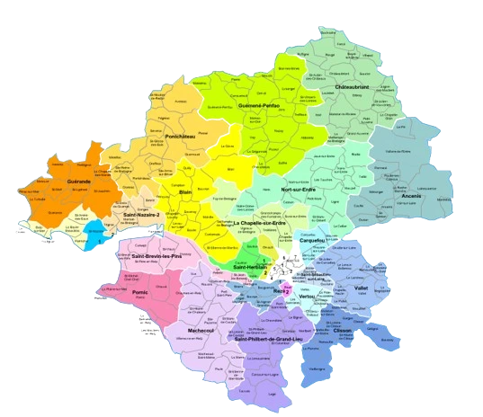

Nous intervenons rapidement à Treillières pour tout type de panne électrique : coupures de courant, dysfonctionnements ou courts-circuits. Nos techniciens effectuent un diagnostic précis et remplacent les composants défectueux afin de restaurer un fonctionnement optimal et sécurisé de votre installation.
LES SERVICES
Installations électriques à Treillières

Réalisation complète de vos installations électriques à Treillières : câblage, équipements sécurisés, tableaux modernes et conformité aux normes en vigueur.
Dépannage en urgence à Treillières

Intervention rapide à Treillières pour résoudre pannes, courts-circuits et dysfonctionnements. Remplacement immédiat des composants défectueux.
Rénovation électrique à Treillières

Modernisation de vos installations électriques à Treillières : mise aux normes NF C 15-100, sécurisation du réseau, et amélioration de la performance énergétique.
Éclairage et chauffage à Treillières

Installation et entretien de systèmes d’éclairage (intérieur/extérieur) et de chauffage électrique à Treillières, dont plancher chauffant et chauffe-eau performant.
Maintenance électrique à Treillières

Contrôles préventifs réguliers à Treillières pour anticiper les pannes, sécuriser vos équipements et garantir la fiabilité de vos installations électriques.
À Treillières, nous assurons l’installation complète de vos systèmes électriques : câblage, prises, dispositifs de sécurité et tableaux de distribution. Chaque projet est réalisé dans le respect des normes en vigueur afin de garantir un réseau fiable, sécurisé et durable. Nous proposons également des diagnostics techniques pour valider la conformité et optimiser la performance de vos installations.
Lassistance Electricien vous accompagne à Treillières pour l’installation et l’entretien de vos systèmes d’éclairage et de chauffage électrique. Nos solutions incluent l’éclairage LED, les systèmes extérieurs, le chauffage au sol et les chauffe-eaux économiques. Nous vous assurons des équipements fiables et conformes aux normes d’efficacité énergétique.
Nos services de maintenance préventive à Treillières permettent de garantir la sécurité et la durabilité de vos installations électriques. Grâce à des contrôles rigoureux, nous détectons les anomalies avant qu'elles ne causent des pannes, assurant ainsi une continuité optimale de votre alimentation électrique.
Pour vos projets de rénovation électrique à Treillières, nous proposons une refonte complète ou partielle de votre réseau : remplacement des tableaux électriques, réfection du câblage, ajout de prises et d’éclairages. Tous nos travaux sont réalisés selon la norme NF C 15-100, assurant sécurité, fiabilité et performance sur le long terme.
NOTRE SAVOIR-FAIRE À TREILLIÈRES
Chez Lassistance Electricien Treillières, nous mettons à votre disposition une équipe d’électriciens expérimentés et passionnés pour sécuriser et moderniser vos espaces. De l’installation à la maintenance, nous utilisons des équipements performants et respectons les normes en vigueur pour vous garantir des travaux de haute qualité. Faites confiance à notre expertise locale pour des solutions électriques alliant performance, durabilité et confort au quotidien.
TARIFS ÉLECTRICIEN À TREILLIÈRES
DES PRIX CLAIRS ET COMPÉTITIFS
Nos prestations à Treillières sont pensées pour vous offrir la meilleure qualité au prix le plus juste. Que ce soit pour une installation, un dépannage ou une mise en conformité, nos services s’adaptent à vos besoins et à votre budget. Demandez votre devis gratuit sans engagement.
DEVIS GRATUITPOURQUOI NOUS CHOISIR À TREILLIÈRES ?
Opter pour Lassistance Electricien Treillières, c’est faire le choix d’un savoir-faire reconnu dans la région. Nous comprenons les exigences spécifiques des logements et bâtiments de Treillières et adaptons chaque intervention en conséquence. Nos prestations incluent l’installation de systèmes électriques modernes, le chauffage électrique, la domotique et la mise aux normes. Notre priorité : votre sécurité, votre confort et votre satisfaction.
SERVICES ÉLECTRIQUES PROFESSIONNELS À TREILLIÈRES
Des solutions personnalisées : Nous intervenons aussi bien pour les particuliers que pour les professionnels, avec des prestations adaptées à chaque besoin : installation, rénovation, maintenance, domotique, etc.
Qualité des équipements : Nous sélectionnons des matériaux de premier choix pour garantir sécurité, fiabilité et performance dans la durée.
Efficacité énergétique : Nos installations visent à réduire votre consommation électrique, tout en respectant les normes environnementales actuelles.
ZONE D’INTERVENTION
Nous intervenons dans tout le département de la Loire-Atlantique, en priorité sur Treillières (44) et ses environs. Vous pouvez nous joindre au 06 56 84 73 24 ou via notre formulaire de devis. Nous assurons également des prestations dans plusieurs autres villes en France.
VOTRE PROJET ÉLECTRIQUE EN TOUTE SIMPLICITÉ À TREILLIÈRES
Avec Lassistance Electricien Treillières, votre projet est entre de bonnes mains. Nous nous occupons de tout : étude, mise en œuvre, conformité, maintenance. Vous n’avez qu’un seul interlocuteur pour l’ensemble des travaux. Notre objectif : garantir votre tranquillité, votre sécurité et la qualité de vos installations.